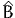

BisonBiogeme: estimating a first model
Michel Bierlaire
July 20, 2015
Report TRANSP-OR 150720
Transport and Mobility Laboratory
School of Architecture, Civil and Environmental Engineering
Ecole Polytechnique Fédérale de Lausanne
transp-or.epfl.ch
The package Biogeme (biogeme.epfl.ch) is designed to estimate the parameters
of various models using maximum likelihood estimation. It is particularly designed
for discrete choice models. In this document, we present step by step how to
specify a simple model, estimate its parameters and interpret the output of the
software package. We assume that the reader is already familiar with discrete
choice models, and has successfully installed BisonBiogeme. This document has
been written using BisonBiogeme 2.4, but should be valid for future versions, as
no major release if foreseen.
1 The data file
Biogeme assumes that the data file contains in its first line a list of labels
corresponding to the available data, and that each subsequent line contains the
exact same number of numerical data, each row corresponding to an observation.
Delimiters can be tabs or spaces. The tool biopreparedata can be used to
transform a file in Comma Separated Version (CSV) into the required format.
The tool biocheckdata verifies if the data file complies with the required
format.
The data file used for this example is swissmetro.dat. Biogeme is available
in two versions. BisonBiogeme is designed to estimate the parameters of a list of
predetermined discrete choice models such as logit, binary probit, nested logit,
cross-nested logit, multivariate extreme value models, discrete and continuous
mixtures of multivariate extreme value models, models with nonlinear utility
functions, models designed for panel data, and heteroscedastic models. It is based
on a formal and simple language for model specification. PythonBiogeme is
designed for general purpose parametric models. The specification of the model
and of the likelihood function is based on an extension of the python
programming language. A series of discrete choice models are precoded for an easy
use.
In this document, we describe the model specification for BisonBiogeme.
2 The model
The model is a logit model with 3 alternatives: train, Swissmetro and car. The
utility functions are defined as:
V_1 = V_TRAIN = ASC_TRAIN + B_TIME * TRAIN_TT_SCALED + B_COST * TRAIN_COST_SCALED V_2 = V_SM = ASC_SM + B_TIME * SM_TT_SCALED + B_COST * SM_COST_SCALED V_3 = V_CAR = ASC_CAR + B_TIME * CAR_TT_SCALED + B_COST * CAR_CO_SCALED
where TRAIN_TT_SCALED, TRAIN_COST_SCALED, SM_TT_SCALED, SM_COST_SCALED,
CAR_TT_SCALED, CAR_CO_SCALED are variables, and ASC_TRAIN, ASC_SM, ASC_CAR, B_TIME,
B_COST are parameters to be estimated. Note that it is not possible to identify all
alternative specific constants ASC_TRAIN, ASC_SM, ASC_CAR from data. Consequently,
ASC_SM is normalized to 0.
The availability of an alternative i is determined by the variable yi,
i=1,...3, which is equal to 1 if the alternative is available, 0 otherwise. The
probability of choosing an available alternative i is given by the logit
model:
Given a data set of N observations, the log likelihood of the sample is
where in is the alternative actually chosen by individual n.
3 Model specification: BisonBiogeme
The model specification file must have an extension .mod. The file 01logit.mod is
reported in Section A.1. We describe here its content.
The model specification is organized into sections. The order in which
the sections appear in the file is not important for BisonBiogeme. Each
section starts with the name of the section within square brackets, such
as [ModelDescription] or [Choice]. The file can contain also comments,
designed to document the specification. Comments are included using the
characters //. All characters after this command, up to the end of the
current line, are ignored by BisonBiogeme. In our example, the file starts
with comments describing the name of the file, its author and the date
when it was created. A short description of its content is also provided.
// File: 01logit.mod // Author: Michel Bierlaire, EPFL // Date: Fri Nov 12 16:43:52 2010 // // Logit model // Three alternatives: Train, Car and Swissmetro // SP data
These comments are completely ignored by BisonBiogeme. However, it is
recommended to use many comments to describe the model specification, for
future reference, or to help other persons to understand the specification.
The first section in 01logit.mod is [ModelDescription]. It allows to mention a
description of the model that will be copied in the report file. Each line of the
description must be delimited by double quotes. Although this description serves
the same purposes as the comments starting with //, the difference is that it is
read by BisonBiogeme and copied verbatim in the report file. Note that this
section is optional and can be omitted.
[ModelDescription] "Example of a logit model for a transportation mode choice" "with 3 alternatives:" "- Train" "- Car" "- Swissmetro, an hypothetical high-speed train"
Each parameter to be estimated must be declared in the section [Beta]. For
each parameter, the following information must be mentioned:
- the name of the parameter,
- the default value,
- a lower bound,
- an upper bound,
- a flag that indicates if the parameter must be estimated (0) or if it
keeps its default value (1).
Like for any identifier in BisonBiogeme, the name of the parameter should comply
with the following requirements: the first character must be a letter (any case) or
an underscore (_), followed by a sequence of letters, digits, underscore (_) or
dashes (-), and terminated by a white space. Note that case sensitivity is
enforced, so that varname and Varname would represent two different variables. In
our example, the default value of each parameter is 0. If a previous estimation had
been performed before, we could have used the previous estimates as default
value. Note that, for the parameters that are estimated by BisonBiogeme, the
default value is used as the starting value for the optimization algorithm. For the
parameters that are not estimated, the default value is used throughout the
estimation process. In our example, the parameter ASC_SM is not estimated (as
specified by the 1 in the fifth position on the corresponding line), and its
value is fixed to 0. A lower bound and an upper bound must be specified.
By default, we suggest to use -1000 and 1000. If the estimated value of
the parameter happens to equal to one of these bounds, it is a sign that
the bounds are too tight and larger value should be provided. However,
most of the time, if a coefficient reaches the value 1000 or -1000, it means
that its variable is poorly scaled, and that its units should be changed.
[Beta] // Name Value LowerBound UpperBound status (0=variable, 1=fixed) ASC_CAR 0 -1000 1000 0 ASC_TRAIN 0 -1000 1000 0 ASC_SM 0 -1000 1000 1 B_TIME 0 -1000 1000 0 B_COST 0 -1000 1000 0
The section [Choice] describes to BisonBiogeme where the dependent variable
(that is, the chosen alternative) can be found in the file.
Note that the syntax is case sensitive, and that CHOICE is different from
choice, and from Choice. Note also that a formula can be specified. In our
example, the variable in the data file is codes as specified in Table 1.
| Train | 1 |
| Swissmetro | 2 |
| Car | 3 |
Table 1: Numbering of the alternatives
Among other output files, Biogeme generates a file in LATEX format. The
section LaTeX (note the sequence of upper and lower cases) is used to specify the
name of the parameters in LATEX syntax. This section is optional and can be
omitted.
[LaTeX] ASC_CAR "Cte. car" ASC_TRAIN "Cte. train" ASC_SM"Cte. Swissmetro" B_TIME"$\beta_\protect\text{time}$" B_COST"$\beta_\protect\text{cost}$"
The specification of the utility functions is described in the section
[Utilities]. The specification for an alternative must start at a new row, and
may actually span several rows. For each alternative, four entries are
specified.
- The identifier of the alternative: the numbering convention must be
consistent with the one specified in section [Choice]. In our case, it is
the one specified in Table 1.
- The name of the alternative: the first character must be a letter (any
case) or an underscore (_), followed by a sequence of letters, digits,
underscore (_) or dashes (-), and terminated by a white space. The
name is case sensitive.
- The availability condition. In our example, it is a direct reference to
one of the entries in the data file. The convention is that zero is treated
as ”false”, and anything different from zero (typically, one) is treated
as ”true”.
- The linear-in-parameter utility function: it is composed of a list of
terms, separated by a +. Each term is composed of the name of a
parameter and the name of an attribute, separated by a *. An attribute
must be either defined in the data file, or in the section [Expressions].
Note that a space is required after each parameter name.
[Utilities] // Id Name Avail linear-in-parameter expression 1 A1_TRAIN TRAIN_AV_SP ASC_TRAIN * one + B_TIME * TRAIN_TT_SCALED + B_COST * TRAIN_COST_SCALED 2 A2_SM SM_AV ASC_SM * one + B_TIME * SM_TT_SCALED + B_COST * SM_COST_SCALED 3 A3_Car CAR_AV_SP ASC_CAR * one + B_TIME * CAR_TT_SCALED + B_COST * CAR_CO_SCALED
The section [Expressions] describes to BisonBiogeme how to compute
attributes not directly available from the data file. When boolean expressions are
involved, the value TRUE is represented by 1, and the value FALSE is represented
by 0. Therefore, a multiplication involving a boolean expression is equivalent to
a “AND” operator. The following code is interpreted in the following
way:
- CAR_AV_SP is equal to CAR_AV is SP is different from 0, and is equal to 0
otherwise. TRAIN_AV_SP is defined similarly.
- SM_COST is equal to SM_CO if GA is equal to 0, that is, if the traveler
does not have a yearly pass (called “general abonment”). If the traveler
possesses a yearly pass, then GA is different from 0, and the variable
SM_COST is zero. The variable TRAIN_COST is defined in the same way.
[Expressions] CAR_AV_SP = CAR_AV * ( SP != 0 ) TRAIN_AV_SP = TRAIN_AV * ( SP != 0 ) SM_COST = SM_CO * ( GA == 0 ) TRAIN_COST = TRAIN_CO * ( GA == 0 )
Variables can be also be rescaled. For numerical reasons, it is good practice to
scale the data so that the values of the estimated parameters are around 1.0. A
previous estimation with the unscaled data has generated parameters around
-0.01 for both cost and time. Therefore, time and cost are divided by
100.
TRAIN_TT_SCALED = TRAIN_TT / 100 TRAIN_COST_SCALED = TRAIN_COST / 100 SM_TT_SCALED = SM_TT / 100 SM_COST_SCALED = SM_COST / 100 CAR_TT_SCALED = CAR_TT / 100 CAR_CO_SCALED = CAR_CO / 100
The section [Exclude] contains a boolean expression that is evaluated for each
observation in the data file. Each observation such that this expression is “true” is
discarded from the sample. In our example, the modeler has developed the model
only for work trips, so that every observation such that the trip purpose is not 1
or 3 is removed. Observations such that the dependent variable CHOICE is 0 are also
removed. Remember the convention that “false” is represented by 0, and “true”
by 1, so that the ‘*’ can be interpreted as a “and”, and the ‘+’ as a “or”.
The exclude condition in our example is therefore interpreted as: either
(PURPOSE different from 1 and PURPOSE different from 3), or CHOICE equal to
0.
[Exclude] (( PURPOSE != 1 ) * ( PURPOSE != 3 ) + ( CHOICE == 0 ))
Finally, the section [Model] specifies the model to be estimated. This basically
tells BisonBiogeme which assumptions must be used regarding the error term. In
this example, it is the logit model (or MNL, for multinomial logit, as it is
sometimes called), characterized by the keyword $MNL.
[Model] // $MNL stands for MultiNomial Logit $MNL
4 Running BisonBiogeme
The estimation of the model is performed using the following command
biogeme 01logit swissmetro.dat
The following information is displayed during the execution.
The following files are generated by BisonBiogeme:
- 01logit.F12: a file containing the main results in ALogit format.
- 01logit.html: the results of the estimation in Html format. Its content
is identical to the content of the file 01logit.rep, and is described in
Section 5.
- 01logit.log: a file containing messages produced by
BisonBiogeme during the run.
- 01logit.rep: the results of the estimation in text format. Its content is
described in Section 5.
- 01logit.res: a file containing the specification of the estimated model,
in the same format as the model specification file. The default value
for each estimated parameter has been replaced by its estimate.
- 01logit.sta: a file containing some descriptive statistics on the data.
- 01logit.tex: a file containing the main results in LATEX format. See
Table 2.
- __specFile.debug: after BisonBiogeme has read the model specification
file, it reports what has been understood in the file __specFile.debug.
It is useful to debug the specification, as it allows to identify what has
been misunderstood by BisonBiogeme.
- default.par: default .par file customizing BisonBiogeme, containing the
most used parameters. See Table 3.
- hess.lis: contains the final BHHH and the second derivative, or
Hessian, matrix. The format is such that it can be copied and pasted
in a matrix language such as Matlab or Octave.
- hessian.lis: contains the (opposite of the) Hessian matrix of the log
likelihood function at each iteration, in a Matlab compatible format.
- model.debug: reports the internal representation of the model, for
debugging purposes.
- parameters.out: provides an exhaustive list of the parameters used by
the run of BisonBiogeme, together with the value that has been used.
- summary.html: this file is designed to consolidate the results of several
runs of BisonBiogeme, with several different models, into one summary
report. It will be updated each time BisonBiogeme is run in the same
directory.
|
|
|
| Model | : | Logit |
| Number of estimated parameters | : | 4 |
| Number of observations | : | 6768 |
| Number of individuals | : | 6768 |
| Null log-likelihood | : | -6964.663 |
| Init log-likelihood | : | -6964.663 |
| Final log-likelihood | : | -5331.252 |
| Likelihood ratio test | : | 3266.822 |
| Rho-square | : | 0.235 |
| Adjusted rho-square | : | 0.234 |
| Final gradient norm | : | +6.288e-04 |
| Diagnostic | : | Convergence reached... |
| Iterations | : | 4 |
| Run time | : | 00:00 |
| Variance-covariance | : | from analytical hessian |
| Sample file | : | swissmetro.dat |
| |
| | | | Robust | | | Parameter | | Coeff. | Asympt. | |
| number | Description | estimate | std. error | t-stat | p-value
|
|
|
|
|
|
|
|
|
|
| | 1 | Cte. car | -0. | 155 | 0. | 0582 | -2. | 66 | 0. | 01 | | 2 | Cte. train | -0. | 701 | 0. | 0826 | -8. | 49 | 0. | 00 |
| 3 | βcost | -1. | 08 | 0. | 0682 | -15. | 89 | 0. | 00 |
| 4 | βtime | -1. | 28 | 0. | 104 | -12. | 26 | 0. | 00 |
|
|
|
|
|
|
|
|
|
| | |
|
| |
Table 2: Results of the estimation in LATEX
[GEV] gevAlgo = "BIO" gevScreenPrintLevel = 1 gevLogFilePrintLevel = 2 gevRandomDistrib = "MLHS" gevPrintVarCovarAsList = 1 gevPrintVarCovarAsMatrix = 0 gevPrintPValue = 1 gevDecimalDigitsStats = 3 gevSignificantDigitsParameters = 3 gevDecimalDigitsTTest = 2 gevNumberOfThreads = 2 [BasicTrustRegion] BTRMaxIter = 1000 [cfsqp] cfsqpMaxIter = 1000 [solvopt] solvoptMaxIter = 1000
Table 3: The .par file generated by default
5 BisonBiogeme: the report file
The report file generated by BisonBiogeme gathers various information
about the result of the estimation. First, some information about the
version of Biogeme, and any description included in the ModelDescription
section.
// This file has automatically been generated. // Tue Aug 11 17:03:52 2015 // Michel Bierlaire, EPFL biogeme 2.4 [Dim 9 ao 2015 18:28:59 EDT] Michel Bierlaire, EPFL Example of a logit model for a transportation mode choice with 3 alternatives: - Train - Car - Swissmetro, an hypothetical high-speed train
Next, a series of generic information about the estimation are provided.
- The type of the model that has been estimated.
- The number of parameters that have been estimated.
- The number of observations, that is, the number of rows in the data
file that have not been excluded.
- The number of individuals in the sample. It is different from the number
of observations in the case of panel data, where several observations
may be associated with the same individual.
- The Null log likelihood is the log likelihood of the sample for a logit model
such that the deterministic part of the utility function is zero for all
alternatives, that is
where #n is the number of alternatives available to individual n and ωn is
the associated weight.
- Cte log likelihood is the log likelihood of the sample for a logit model where
the deterministic part of the utility function of each alternative contains
only the alternative specific constant. If all alternatives are always
available, it is computed as
where nj is the number of times alternative j has been chosen, and
n = ∑
j∈ nj is the number of observations in the sample. Note that if some
alternatives are not available for some observations, the formula (4) is not
valid, and the value is not reported.
nj is the number of observations in the sample. Note that if some
alternatives are not available for some observations, the formula (4) is not
valid, and the value is not reported.
- Init log likelihood is the log likelihood of the sample for the model
defined with the default values of the parameters provided in the .mod
file.
- Final log likelihood is the log likelihood of the sample for the estimated
model.
- Likelihood ratio test is
where  0 is the null log likelihood as defined above, and * is the log
likelihood of the sample for the estimated model.
0 is the null log likelihood as defined above, and * is the log
likelihood of the sample for the estimated model.
- Rho-square is
- Adjusted rho-square is
where K is the number of estimated parameters. Note that this statistic is
meaningless in the presence of constraints, where the number of degrees of
freedom is less than the number of parameters.
- Final gradient norm is the gradient of the log likelihood function computed
for the estimated parameters. If no constraint is active at the solution, it
should be close to 0. If there are equality constraints, or if some bound
constraints or inequality constraints are active at the solution (that is,
they are verified with equality), the gradient may not be close to
zero.
- Diagnostic is the diagnostic reported by the optimization algorithm. If the
algorithm has not converged, the estimation results presented in the file
cannot be used as such.
- Iterations is the number of iterations used by the algorithm before it
stopped.
- Run time is the actual time used by the algorithm before it stopped, in
minutes and seconds (format mm:ss).
- Variance-covariance specifies how the second-derivative matrix (inverted to
obtain the variance-covariance matrix) has been calculated. It can be either
from a finite difference approximation (which is accurate, but may take time
to compute), or from the BHHH matrix (which is less accurate, but faster to
compute, see Berndt et al., 1974). The user selects this option with
parameter gevVarCovarFromBHHH.
- Sample file: the name of the file containing the data.
Model: Logit Number of estimated parameters: 4 Number of observations: 6768 Number of individuals: 6768 Null log likelihood: -6964.663 Init log likelihood: -6964.663 Final log likelihood: -5331.252 Likelihood ratio test: 3266.822 Rho-square: 0.235 Adjusted rho-square: 0.234 Final gradient norm: +6.288e-04 Diagnostic: Convergence reached... Iterations: 4 Run time: 00:00 Variance-covariance: from analytical hessian Sample file: swissmetro.dat
The following section reports the estimates of the parameters of the utility
function, together with some statistics. For each parameter βk, the following is
reported:
- The name of the parameter.
- The estimated value βk.
- The standard error σk of the estimate, calculated as the square root of
the kthdiagonal entry of the Rao-Cramer bound (see Appendix B).
- The t statistics, calculated as tk = βk∕σk.
- The p value, calculated as 2(1 - Φ(tk)), where Φ(⋅) is the cumulative
density function of the univariate standard normal distribution.
- A sign * is appended if the absolute value value of tk is less than 1.96,
emphasizing a potential lack of statistical significance. In this example,
no such sign appears.
- The robust standard error σkR of the estimate, calculated as the square
root of the kthdiagonal entry of the robust estimate of the variance
covariance matrix. (see Appendix B).
- The robust t statistics, calculated as tkR = βk∕σkR.
- The robust p value, calculated as 2(1 - Φ(tkR)), where Φ(⋅) is the
cumulative density function of the univariate normal distribution.
- A sign * is appended if the absolute value value of tkR is less than 1.96,
emphasizing a potential lack of statistical significance. In this example,
no such sign appears.
Utility parameters ****************** Name Value Std err t-test p-val Rob. std err Rob. t-test Rob. p-val ---- ----- ------- ------ ----- ------------ ----------- ---------- ASC_CAR -0.155 0.0432 -3.58 0.00 0.0582 -2.66 0.01 ASC_SM 0.00 --fixed-- ASC_TRAIN -0.701 0.0549 -12.78 0.00 0.0826 -8.49 0.00 B_COST -1.08 0.0518 -20.91 0.00 0.0682 -15.89 0.00 B_TIME -1.28 0.0569 -22.46 0.00 0.104 -12.26 0.00
The following section reports, for each alternative, its identifier, its name, its
availability condition, and the specification of its utility function.
Utility functions ***************** 1 A1_TRAIN TRAIN_AV_SP ASC_TRAIN * one + B_TIME * TRAIN_TT_SCALED + B_COST * TRAIN_COST_SCALED 2 A2_SMSM_AV ASC_SM * one + B_TIME * SM_TT_SCALED + B_COST * SM_COST_SCALED 3 A3_Car CAR_AV_SP ASC_CAR * one + B_TIME * CAR_TT_SCALED + B_COST * CAR_CO_SCALED
The following section reports, for each pair of parameters k and ℓ,
- the name of βk,
- the name of βℓ,
- the entry Σk,ℓ of the Rao-Cramer bound (see Appendix B),
- the correlation between βk and βℓ, calculated as
- the t statistics, calculated as
- a sign * is appended if the absolute value value of tk,ℓ is less than 1.96,
emphasizing that the hypothesis that the two parameters are equal
cannot be rejected at the 5% level (in this example, no such sign
appears),
- the entry Σk,ℓR of ΣR, the robust estimate of the variance covariance matrix
(see Appendix B),
- the robust correlation between βk and βℓ, calculated as
- the robust t statistics, calculated as
- a sign * is appended if the absolute value value of tk,ℓR is less than 1.96,
emphasizing that the hypothesis that the two parameters are equal cannot
be rejected at the 5% level (in this example, one such sign appears, for
parameters B_COST and B_TIME).
The final line reports the value of the smallest singular value of the second derivatives
matrix. A value close to zero is a sign of singularity, that may be due to a lack of
variation in the data or an unidentified model.
Correlation of coefficients *************************** Coeff1 Coeff2 Covariance Correlation t-test Rob. covar. Rob. correl. Rob. t-test ------ ------ ---------- ----------- ------ ----------- ------------ ----------- B_COST B_TIME 0.000550 0.187 2.79 0.00220 0.309 1.84 * ASC_TRAIN B_TIME -0.00225 -0.722 5.56 -0.00760 -0.883 3.18 ASC_TRAIN B_COST 8.22e-06 0.00289 5.08 -0.000831 -0.147 3.34 ASC_CAR B_TIME -0.00144 -0.585 12.57 -0.00482 -0.796 7.27 ASC_CAR B_COST 0.000485 0.216 15.52 2.86e-05 0.00722 10.40 ASC_CAR ASC_TRAIN 0.00138 0.580 11.85 0.00390 0.812 11.16 Smallest singular value of the hessian: 63.2021
A Complete specification file
A.1 01logit.mod
B Estimation of the variance-covariance matrix
Under relatively general conditions, the asymptotic variance-covariance matrix of
the maximum likelihood estimates of the vector of parameters θ ∈ℝK is given by
the Cramer-Rao bound
The term in square brackets is the matrix of the second derivatives of
the log likelihood function with respect to the parameters evaluated at
the true parameters. Thus the entry in the kth row and the ℓth column
is
 | (13) |
Since we do not know the actual values of the parameters at which to evaluate
the second derivatives, or the distribution of xin and xjn over which to take their
expected value, we estimate the variance-covariance matrix by evaluating
the second derivatives at the estimated parameters  and the sample
distribution of xin and xjn instead of their true distribution. Thus we
use
and the sample
distribution of xin and xjn instead of their true distribution. Thus we
use
![[ ] [ ]
∂2L(θ ) ∑N ∂2 (yin ln Pn (i) + yjnlnPn (j))
E ------- ≈ ----------------------------- ,
∂θk∂θ ℓ n=1 ∂θk∂ θℓ θ=^θ](bisonfirstmodel16x.png) | (14) |
as a consistent estimator of the matrix of second derivatives.
Denote this matrix as Â. Note that, from the second order optimality
conditions of the optimization problem, this matrix is negative semi-definite,
which is the algebraic equivalent of the local concavity of the log likelihood
function. If the maximum is unique, the matrix is negative definite, and the
function is locally strictly concave.
An estimate of the Cramer-Rao bound (12) is given by
 | (15) |
If the matrix  is negative definite then - is invertible and the Cramer-Rao
bound is positive definite.
Another consistent estimator of the (negative of the) second derivatives matrix
can be obtained by the matrix of the cross-products of first derivatives as
follows:
![[ ] n ( ) ( )T
∂2L-(θ) ∑ ∂-ℓn-(θ^) ∂ℓn(^θ-) ^
-E ∂θ∂ θT ≈ ∂θ ∂θ = B,
n=1](bisonfirstmodel18x.png) | (16) |
where
 | (17) |
is the gradient vector of the likelihood of observation n. This approximation is
employed by the BHHH algorithm, from the work by Berndt et al. (1974).
Therefore, an estimate of the variance-covariance matrix is given by
although it is rarely used. Instead,  is used to derive a third consistent
estimator of the variance-covariance matrix of the parameters, defined
as
 | (19) |
It is called the robust estimator, or sometimes the sandwich estimator, due to
the form of equation (19). Biogeme reports statistics based on both the
Cramer-Rao estimate (15) and the robust estimate (19).
When the true likelihood function is maximized, these estimators are
asymptotically equivalent, and the Cramer-Rao bound should be preferred
(Kauermann and Carroll, 2001). When other consistent estimators are used, the
robust estimator must be used (White, 1982). Consistent non-maximum
likelihood estimators, known as pseudo maximum likelihood estimators, are
often used when the true likelihood function is unknown or difficult to
compute. In such cases, it is often possible to obtain consistent estimators
by maximizing an objective function based on a simplified probability
distribution.
References
Berndt, E. K., Hall, B. H., Hall, R. E. and Hausman, J. A. (1974).
Estimation and inference in nonlinear structural models, Annals of
Economic and Social Measurement 3/4: 653–665.
Kauermann, G. and Carroll, R. (2001). A note on the efficiency
of sandwich covariance matrix estimation, Journal of the American
Statistical Association 96(456).
White, H. (1982). Maximum likelihood estimation of misspecified
models, Econometrica 50: 1–25.